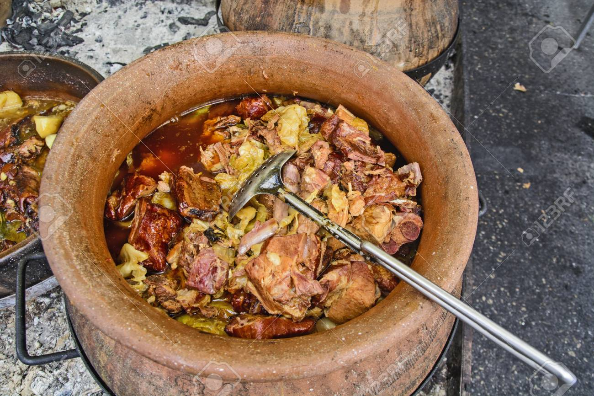

Wedding Cabbage

This is a dish whose history can be traced back to the Middle ages. The name is derived
from the fact that the dish was most commonly prepared for the weddings or similar big
feasts that require amounts of food that can feed large number of people. It gets it
best flavour if cooked long, in big amount in the clay pot in an open fire.
Ingredients
- 1/2 head of sour cabbage, outer leaves pealed, heart removed and cut in 4cm chunks
- 100g beef shoulder meat/ 100g pork shoulder meat (fattier parts are better),
diced in 4cm chunks
- 100g smoked ribs and beacon, bone and meat separated, meat diced
- 1 tablespoon lard
- 1 medium onion, chopped medium size
- 1 carrot, diced
- 1/2 teaspoon dry parsley
- 1 teaspoons salt
- 1 pinch of ground pepper
- pinch red sweet paprika
- 1 bay leaf
- 50ml sunflower oil
Steps
- Cover the bottom and the sides of the 18cm wide pot with lard and cover the bottom
with a whole cabbage leaf.
- In another bowl combine chopped onion, carrot and sunflower oil and mix to combine.
- Take a cabbage leaf and wrap each piece of meat in a roll. Layer in the pot, pressing
each role against the other tightly so that it wouldn’t open while cooking. Reserve
a few leaves.
- Add the onions and carrots to the pot, cover with remaining oil and add the spices,
bay leaf and pour in 500ml cold water.
- Cover with remaining few cabbage leaves and place inverted plate over the vegetables
to prevent it from moving when the water boils. Bring to a boil on strong fire, then
reduce and cook for 40min.
- Turn the fire off and leave for another 30 minutes to be cooked down.